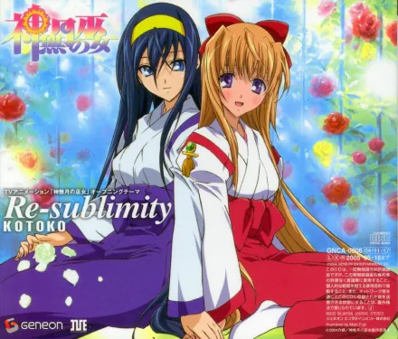

神無月の巫女
贵方が好きなの。 贵方の瞳が好き。
春の银河の样に煌めく光が、春の日差しの样な优しいまなざしが好き。 贵方の发が好き。
そよ风にひらめくシルクの样なさらさらの发が好き。 贵方の唇が好き。
蜜の样な口づけをくれる。切ない吐息を闻かせてくれる唇が好き。 贵方の声が好き。
高くて甘い心に染み込む澄み切った声が好き…… 贵方の体が好き。
抱きしめると折れてしまいそうな华奢な腰が、薄くてでも形の良い胸が、重ねて肌から传わって来るぬくもりが好き。 でも一番好きなのは贵方の心……
脆くて伤つきやすい。でもどこまでも纯粹で美しい。决して谁も责めたりしない全てを许す优しさに满ちた魂が…… 好きよ、大好き。
贵方の全てがいとしくてたまらないの。
姬子……贵方以外の者なんかもう何もいらない。ただ贵方だけが欲しいの。 あなたと私、二人だけの永远の夜が……
